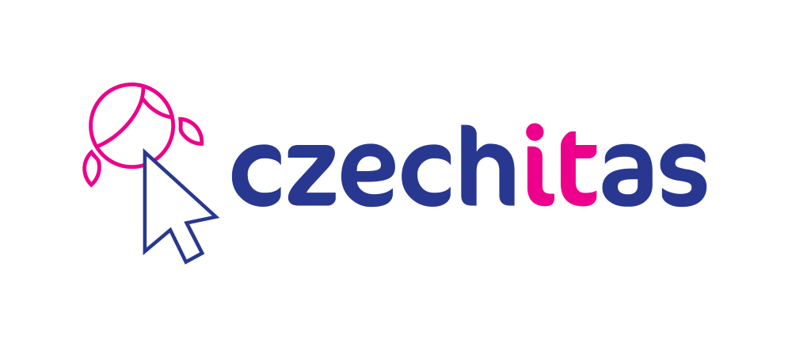

O mně
S webem jsem pracovala na amatérské úrovni, ale mateřská dovolená v
kombinaci s lockdownem mi umožnila studium hlouběji. Velice mě to baví.
Chci si najít práci, kde znalosti využiji a prohloubím je. Zatím mohu na
částečný úvazek při mateřské dovolené a po roce na HPP.
Kurzy

- Digitální akademie Web
- Staň se kodérkou
- Dlouhodobý kurz PHP
- Bootstrap
- Wordpress 1, 2, 3
- Facebook, Instagram, LinkedIn
- Photoshop
- Úvod do HTML a CSS
- Úvod do programování 1 - JavaScript


- Google UX Design Professional Certificate


- Complete React Developer in 2021
Jazykové znalosti
- Anglický jazyk středně pokročilá znalost
- Německý jazyk středně pokročilá znalost
- Francouzský jazyk pasivní znalost
Pracovní zkušenosti
Rodičovská pauza | 2017 – současnost
-
Penzion Gerta Český Krumlov, výpomoc v rodinném penzionu, tvorba webu,
Instagram, zajištění lockdown dotací
-
Spolupracující osoba manžela - ubytovací služby, tvorba webu, vedení
účetnictví
Československá obchodní banka, a.s. | 2008 - 2017
České Budějovice – Hroznová, úvěrový specialista
Český Krumlov – Špičák, klientský poradce
-
Zpracování hypotečních, spotřebitelských a podnikatelských úvěrů,
posuzování bonity klienta
- Akvizice nových a obsluha stávajících klientů
- Odpovědnost za výsledky pobočky v oblasti financování
-
Školení kolegů a externích zpracovatelů v úvěrové doméně včetně
spolupráce
- Aktivní spolupráce s ostatními útvary banky
-
Vzdělávání v bankovnictví, prodejních a komunikačních dovednostech
Vzdělání
Jihočeská univerzita, Ekonomická fakulta | 2005 - 2010
- Titul Ing.
- Studijní program Ekonomika a management
- Obor Obchodní podnikání
Ostatní
-
znalost Microsoft Word, Excel, PowerPoint, FrontPage, Outlook,
Internet, sociální sítě, hotelové systémy, Wondershare Filmora
- Řidičský průkaz skupiny B, aktivní řidič
- Samostatnost, ochota na sobě pracovat, učit se
- Prezentační a komunikační dovednosti, profesionální vystupování
- Orientace ve finančních výkazech